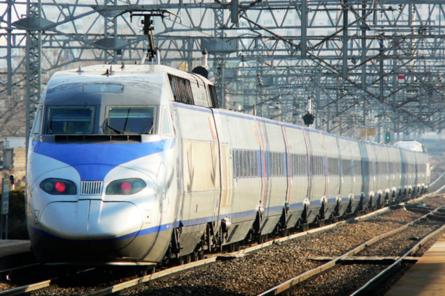
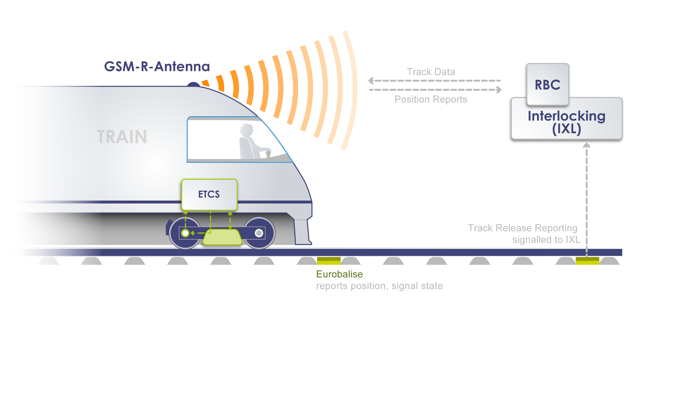

01
제동 모델 분석
KTX 제원, UIC 규격 등을 참고하여
제동모델을 계산하기 위한 분석

- 제동거리를 구하기 위해 차량 제원 및 UIC 규격을 참고하여 열차의 제동거리를 계산하는 식을 만듬
ETCS level 2 요구사양을 만족하는 제동 모델 구현

- 거리를 구하는 식을 c언어로 구현
- ETCS Subset076 시나리오 통과(Multitel사의 ETCS 시험장비 사용)
- HEMU열차로 오송-광주 송정 구간 현차 시험 통과
- 경강선 시뮬레이터로 주행시험 통과